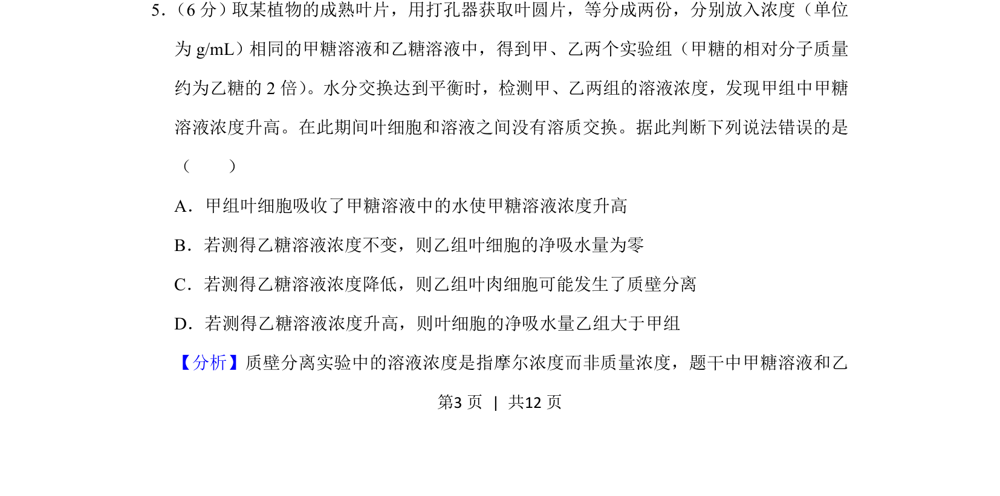
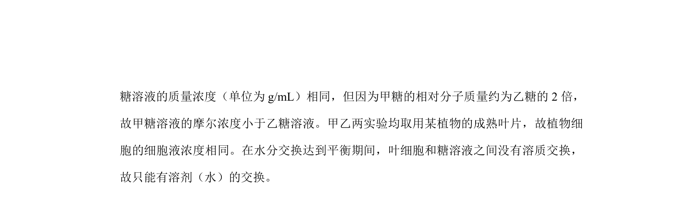
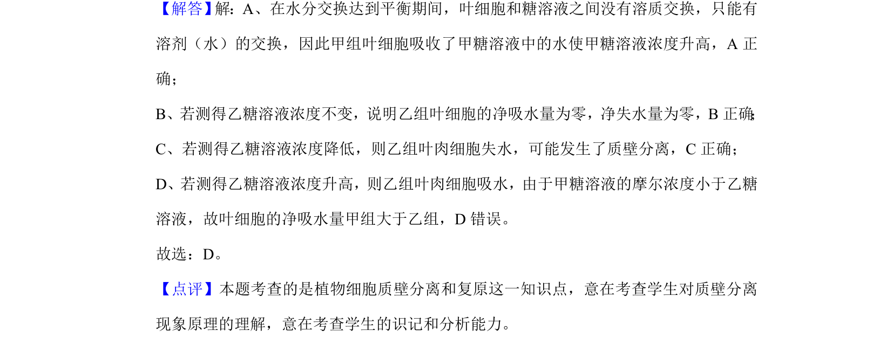

考点：渗透作用 质壁分离 质量浓度与摩尔浓度 细胞吸水与失水


甲糖与乙糖溶液质量浓度相同但摩尔浓度不同，通过溶液浓度变化判断植物细胞渗透吸水与质壁分离情况

📄 原 PDF 第 3 页：
素材/真题/吉林/2008-2024·（吉林）生物高考真题/2020年高考生物试卷（新课标Ⅱ）（解析卷）.pdf
5． （6分）取某植物的成熟叶片，用打孔器获取叶圆片，等分成两份，分别放入浓度（单位 为g/mL）相同的甲糖溶液和乙糖溶液中，得到甲、乙两个实验组（甲糖的相对分子质量 约为乙糖的2倍） 。水分交换达到平衡时，检测甲、乙两组的溶液浓度，发现甲组中甲糖 溶液浓度升高。在此期间叶细胞和溶液之间没有溶质交换。据此判断下列说法错误的是 （ ） A．甲组叶细胞吸收了甲糖溶液中的水使甲糖溶液浓度升高 B．若测得乙糖溶液浓度不变，则乙组叶细胞的净吸水量为零 C．若测得乙糖溶液浓度降低，则乙组叶肉细胞可能发生了质壁分离 D．若测得乙糖溶液浓度升高，则叶细胞的净吸水量乙组大于甲组
【分析】质壁分离实验中的溶液浓度是指摩尔浓度而非质量浓度，题干中甲糖溶液和乙